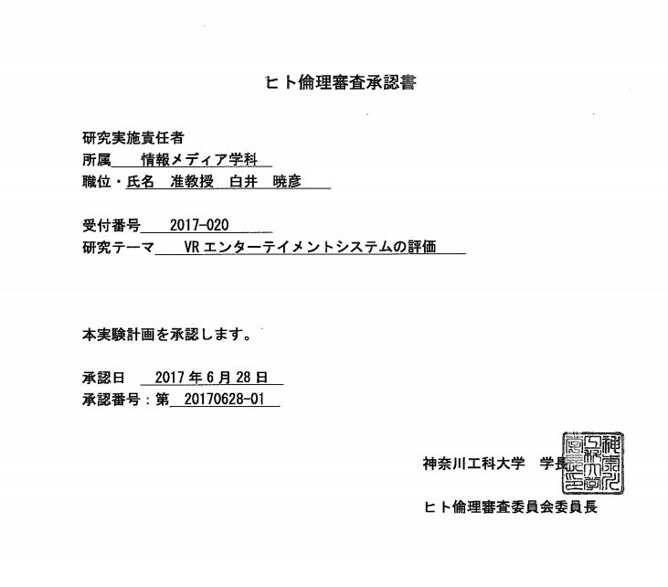

「VRエンタテイメントシステムの評価」についての研究倫理情報
このたび、神奈川工科大学 ヒト倫理委員会より、ヒト倫理審査の承認をいただきましたので、ここに掲出いたします。

この許諾は「神奈川工科大学ヒトを対象とする研究に関する倫理規程」に基づく申請および審査によって許可されるもので、以下の同意書その審査内容に含まれます。
{kind=link}
白井研究室ではVRエンタテイメントシステムに関する評価を研究の中心においており、今年度は学内重点研究プロジェクト「VREAK（VR Entertainment Application Knowledge）センターの開発」といったテーマも推進しております。オンライン・オフラインでのエンタテイメントシステムの体験・公開実験、アンケート調査などを多く行います。多くは非侵襲（＝体験によって肉体に元に戻らない作用を行う）の体験ですが、大学における研究活動であり、また社会的影響力を鑑みて、研究活動の中心でもありますのでここに掲出させていただきます。
本承認に関連する研究論文には謝辞において「この研究は，神奈川工科大学のヒトを対象とした研究に関わる倫理審査委員会で承認されたもの（承認番号20170628-01）である。／This study was approved by the Ethical Review Board for the use of human subjects of Kanagawa Institute of Technology (No.20170628-01).」と記載されます。
各調査や内容、結果に関するご意見はお問い合わせフォームよりお問い合わせ下さい。
お問い合わせ： https://www.shirai.la/contact/
ショートカット
現在実施中の調査
-
- TEPIA 先端技術館 「Manga Generator Pro」および「ExPixel」（常設展示）
Anime Expo 2017（アメリカ・ロサンゼルス）での展示評価 2017/7/1-4終了しました- GTMF2017 （秋葉原）での展示評価 2017/7/14
- VRやリモートロボティクスを使った「 #働き方改革 」に関するアンケート（一般公開・ネットアンケート） 2017/7/21-28
- VRを用いた体験学習に関するアンケート（立教池袋中学校・高等学校と共同研究・一般向けネットアンケート）2017/7/24-28 https://goo.gl/VbE394
#VRを用いた体験学習に関するアンケートhttps://t.co/uofMCqJHjB
実施中です．7/28(予定)，VR関連に限らずすべての人にご参加いただけます．
なお学生さんの親御さんにもご参加いただいているようで，頭の下がる思いです．本当にありがとうございます． pic.twitter.com/E5P8AIQg6m— Akihiko SHIRAI, Ph.D (@o_ob) July 23, 2017
今後予定される調査
- ACM SIGGRAPH 2017 2017/6/30-7/3
- CEDEC2017
＜被験者の方へのご説明＞
被験者の方へ「VRエンタテイメントシステムの評価」についてのご説明（Ver.20160626）
はじめに
この冊子は、神奈川工科大学 情報学部 情報メディア学科において行われている「VRエンタテイメントシステムの評価」という研究について説明したものです。担当者からこの研究についての説明をお聞きになり、研究の内容を十分にご理解いただいた上で、あなたの自由意志でこの研究に参加していただけるかどうか、お決めください。ご参加いただける場合は、別紙の「同意文書」にご署名のうえ、担当者にお渡しください。
1. ヒトを対象とした研究について
人を対象とした研究を行う際には、対象者の人権および尊厳を重んじ、個人情報の保護に留意する必要があります。そこで神奈川工科大学では、対象者を保護し、研究の公正と信頼性を確保することを目的として、研究計画の倫理審査をおこなっています。この研究は神奈川工科大学の「倫理委員会」で倫理的観点および科学的観点からその妥当性について審査を受け、倫理委員会の承認を得て実施するものです。
2. この研究の意義と目的
本研究「VRエンタテイメントシステムの評価」は、多種多様にわたる人間の自然なふるまいをモーションビッグデータとして扱い、取得・保存可能にし、大量のデータから意味を抽出し，人間の生活の質向上に寄与することを目的としています。
実験室内で実験の目的を知りえる学生協力者によって実験を行う方法もありますが、本研究では、実際の生活環境や、楽しみのある空間における自然なふるまいから評価を取得します。
3. 研究の方法
（1）対象となる被験者の方
この研究の実験参加者は以下を想定しております．
・実験に合意ある一般の学生
・実験に合意ある該当の実習等の授業を受講する学生
・実験に参加する生徒（中高生）およびその保護者
・公開実験における合意ある一般の参加者
・ミュージアム（TEPIA，日本科学未来館等）における合意ある一般の参加 者
・インターネット上の任意の参加者
・日本語圏以外の合意ある一般の参加者
以上のご本人に説明を行い、同意をいただくこととなりますので、ご理解ご協力をお願いします。同意が得られない場合は除きます。
■対象年齢の範囲と未成年者の同意を得る方法について
対象年齢は1歳～90歳とします。未成年者および幼児の場合は親権者に同意書の文言を丁寧に説明し、氏名・住所（郵便番号）・性別・年齢・同意のサインによって同意とします。
■オンラインフォームにおける同意
本研究はオンラインフォームおよびネットワークに接続されたVRシステムによって質問を行います。オンライン上のチェックボックス送信および、体験中の選択によって同意とします。
■多言語対応について
本研究は国際的な評価を行っています。必要に応じて日本語以外の言語を表示します。
（２）研究の内容および方法
この研究の対象となる被験者の方で、研究へのご協力に同意いただいた方から、以下のご協力をいただきます。
＜実験によって異なります＞
1：多重化ディスプレイシステムの評価
物理計測による画質評価に加え，ユーザの印象およびインタラクションの評価を行います．赤外線測距センサを用いた滞留時間の評価，視線トラッカーを使った注視点を一般的に使用される環境において評価します．個人を特定するような画像の自動取得は行いません．
2：複数のVRエンタテイメントシステムの横断評価
VRエンタテイメントシステムの体験に併せ，参加者各自のスマートフォンにおいてインターネット上のアンケートを実施します．ビデオカメラ等の記録，紙媒体でのアンケートも行います．提供されたデータは複数のエンタテイメントシステムで共有することがあります．実験参加者の写真の利用可否などは，上記システムにおいてオプトアウトを行うことができます．
3：保育体験VRシステム
VRシステム「Real Baby – Real Family」を使った「主体的な保育体験」を評価します．合意に基づき体験者の顔写真を取得します．実験への参加合意および画像取得，利用はMQRシステムを使い，同意されない場合も体験は可能とします．
4：ビデオゲームの習熟および疲労の評価
実験前・実験後のアンケートの記入によるプロファイル，ビデオゲームのゲームスコア, 視線入力装置を用いた注視，プレイ中の被験者をビデオカメラ等で収録し分類を行います．
5：マンガ没入型VRエンタテイメントシステム
マンガ没入型VRエンタテイメントシステム「Manga Generator Pro」におけるリアルタイム映像生成の画質評価を行います．
6：視線制御による3Dアバターの評価
VRエンタテイメントシステム内に表示される3D空間内の人物，キャラクター，他のユーザなど（アバター）の印象の違いを評価します．
＜共通＞
以上にご協力お願いいたします。結果は学会発表およびWebサイトにて集計結果および個人の感想を，個人を特定できない形で公表します．
（３）研究終了後の対応
この研究が終了した後は、この研究で得られた成果も含めて、担当者は責任をもって最も適切と考える処理をいたします。
4. 予想される利益と不利益
（1）予想される利益
この研究による個別の体験は無償であり、無保証です。謝礼等はありません。個々の体験者の特性・撮影した画像に合わせたエンタテイメント体験が楽しめます。
参加者が許可したデータは参加者合意の上で他のVRエンタテイメントシステムによって利用されることもあります（例えばゲーム内の名前など）。
（2）予想される不利益
以下の不利益が考えられます。
・体験中の様子：実験の記録に加えて、他の来場者等が体験中の様子や視界を撮影することがあります。会場のモラルに準じますが、録画や撮影、その公開を禁ずる場合はあらかじめ実験スタッフにお伝えください。
・テストのスコア：実験中に様々なテストを行います。結果については本人の希望で開示しますが、個人と紐付けずに管理します。
・個人の特定：記録映像を撮影し、個人の体験記録を収集します。撮影した映像とデータは個人を特定できないように「背面から撮影」，「HMD，マスク等の着用」もしくは「ぼかし・モザイク等の画像処理」を施します。
・危険性：VR体験注に、万が一、気分が悪くなった時などは，実験参加者の意思で実験を中止することができます。
5. ご協力をお願いすること
この研究への参加に同意いただけた場合にご協力をお願いすることは次の３点です。
①自然なエンタテイメント体験への参加
②装着物の正しい取り扱いやオペレータの指示に従うこと
③事前事後のアンケートへのご協力
6. 研究実施予定期間と参加予定者数
（1）実施予定期間
この研究は、2017年6月から2018年3月まで行われます。
（2）参加予定者数
30,000名の被験者の参加を予定しております。
7. 研究への参加とその撤回について
あなたがこの研究に参加されるかどうかは、あなたご自身の自由な意志でお決めください。たとえ参加に同意されない場合でも、あなたは一切不利益を受けません。また、あなたが研究の参加に同意した場合であっても、いつでも研究への参加をとりやめることができます。
8. 研究への参加を中止する場合について
あなたがこの研究へ参加されても、次の場合は参加を中止していただくこととなります。あなたの意志に反して中止せざるをえない場合もありますが、あらかじめご了承ください。
① あなたが研究への参加の中止を希望された場合
② この研究全体が中止となった場合
③ その他、担当者が中止したほうがよいと判断した場合
９. 個人情報の取扱いについて
この研究にご参加いただいた場合、あなたから提供された動画データなどのこの研究に関するデータは、個人を特定できない形式に記号化したIDにより神奈川工科大学 白井研究室・VREAKセンターにおいて管理され、改正個人情報保護法に準じたトレーサビリティとオプトアウトを維持します。
また、この研究が正しく行われているかどうかを確認するために、倫理委員会などが、あなたの研究の記録などを見ることがあります。このような場合でも、これらの関係者には、記録内容を外部に漏らさないことが法律などで義務付けられているため、あなたの個人情報は守られます。
この研究から得られた結果は、学会や医学雑誌などで公表されることがあります。このような場合にも、お名前など、あなたの個人情報に関することが外部に漏れることは一切ありません。この研究で得られたデータは、他の目的で使用することはありません。
なお、この研究で得られたデータは、研究終了後、定められた時期にすべて廃棄いたします。その際も、個人情報が外部に漏れないよう十分に配慮いたします。
10. 健康被害が発生した場合の補償について
この研究による特別な補償はありません。
11. 費用負担、研究資金などについて
この研究における諸経費は、神奈川工科大学重点研究プロジェクト「VREAKセンター」が支出しています。従い、ご参加いただくにあたり、あなたの費用負担が発生することはありません。なお、ご参加いただくにあたって、前述の通り謝金などのお支払いもありません。
12. 知的財産権の帰属について
この研究から成果が得られ、知的財産権などが生じる可能性がありますが、その権利は神奈川工科大学に帰属します。
13. 研究組織
この研究は以下の組織で行います。
【研究代表者】
神奈川工科大学 情報学部 情報メディア学科
【研究事務局】
神奈川工科大学 情報学部 情報メディア学科
住 所：厚木市下荻野１０３０
電 話：042-291-3201
【参加施設】
神奈川工科大学、TEPIA先端技術館
14. 研究担当者と連絡先（相談窓口）
この研究について、何か聞きたいことやわからないこと、心配なことがありましたら、以下の研究担当者におたずねください。
【研究担当者】
◎ 神奈川工科大学 情報学部 情報メディア学科 白井暁彦
神奈川工科大学 情報学部 情報メディア学科 武田 竜平
神奈川工科大学 情報学部 情報メディア学科 東田茉莉花
神奈川工科大学 情報学部 情報メディア学科 浅野隆弥
神奈川工科大学 情報学部 情報メディア学科 渡邉翔
神奈川工科大学 情報学部 情報メディア学科 望月宥冶
神奈川工科大学 情報学部 情報メディア学科 山口聖也
神奈川工科大学 情報工学専攻 Rex SHIEH
（◎ 研究責任者）
【連絡先】
神奈川工科大学 情報学部 情報メディア学科 白井暁彦
住 所：厚木市下荻野１０３０
電 話：042-291-3201
アドレス： https://new.shirai.la
連絡担当者：白井暁彦
2017年6月16日作成（第1版）
神奈川工科大学 情報学部 代表者 白井
＜同意書＞
同意文書
神奈川工科大学 情報学部 准教授 白井暁彦 殿
研究課題名：「VRエンタテイメントシステムの評価」
- ヒトを対象とした研究について
- この研究の意義と目的
- 研究の方法
- 予想される利益と不利益
- ご協力をお願いすること
- 研究実施予定期間と参加予定者数
- 研究への参加とその撤回について
- 研究への参加を中止する場合について
- 個人情報の取扱いについて
- 健康被害が発生した場合の補償について
- 費用負担、研究資金などについて
- 知的財産権の帰属について
- 研究組織
- 研究担当者と連絡先
【被験者の方の署名欄】
私はこの研究に参加するにあたり、以上の内容について十分な説明を受けました。研究の内容を理解いたしましたので、この研究に参加することについて同意します。また、説明文書「被験者の方へ」と本同意文書の写しを受け取りました。
同意日：平成 年 月 日
氏 名： （自署）
住 所：
【担当者の署名欄】
私は、上記の被験者に本研究について十分に説明した上で同意を得ました。
説明日：平成 年 月 日
氏 名： （自署）
保存用、（写）被験者用
＜同意撤回書＞
同意撤回書
神奈川工科大学 情報学部 准教授 白井暁彦 殿
研究課題名：「VRエンタテイメントシステムの評価」
【被験者の方の署名欄】
私は、上記研究について担当者より説明を受け、この研究に参加することについて同意をいたしましたが、これを撤回します。
同意撤回日：平成 年 月 日
氏 名 ： （自署）
住 所 ：
【担当者の署名欄】
私は、上記の被験者が、同意を撤回されたことを確認しました。
確認日：平成 年 月 日
氏 名： （自署）
「「VRエンタテイメントシステムの評価」についての研究倫理情報」への1件のフィードバック
コメントは停止中です。